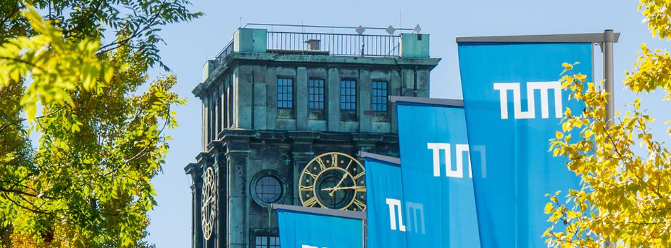

Harbin
Harbin is in the northeast of china, which is famous for its snowy winter. It is a city with the name of "East Moscow", because of its unique Russia style. I spent my four-year university life in Harbin Institute of Technology (called "HIT" for short). HIT is one of the leading universities in China and it made the largest contribution to the success of Chinese space program.

Taiwan
In my third year of college, I went to Taiwan National Central University (called "NCU" for short) as an exchange student. It was exactly the 100th school anniversary of NCU in that year, which made me feel those days more memorable. I spent half year there and almost travel through the whole island.
Taigu
Taigu is my hometown where I spent my childhood there. It is located in the Shanxi Province of China, where is the seminary of Chinese culture.
Tibet
I have been to Tibet for severl times. Tibet is really a fantastic place where makes you feel in another planet. I hope I can go back to Lhasa via driving trip someday sothat I can enjoy the wonderful landcsape along the way, which is much better than the view through a small window of airplane or train.
Shenzhen
In 2015 Winter, I worked as an intern in Shenzhen. Shenzhen is not only a major morden city in China, but also an international financial centre. There are millions of startups and high-tech companies in Shenzhen, such as the DJI.

Lijiang
I took a trevel to Yunnan in 2014. When I came to the end of the trip, Lijiang Ancient City, I decided to live there rather than just "go through" it. Fortunately, I found a job in the Ancient City and lived there for a month. It is an precious experience with many truly memorable moments.

Munich
I participated in the Winter School of Technische Universität München (TUM) in 2017. After this program, I traveled through Western Europe. Actually, compared with German beer and soccer, I was much more impressed by their magnificent churches.
Hong Kong
After graduated from HIT, I continue my study in Hong Kong University of Science and Technology (HKUST). In recent years, HKUST is recognised as one of the best young universities around the world. As for the life in Hong Kong, there is a saying that "you can leave Hong Kong, but it will never leave you".
Toulouse
Toulouse is the fourth-largest city in France, called as ‘La Ville Rose’ (or ‘Pink City’) due to the pinkish terracotta bricks in buildings. Toulouse is the centre of the European aerospace industry, with the headquarters of Airbus. I study in Ecole Nationale de l'Aviation Civile (French National Civil Aviation University, short as "ENAC") for a joint master degree in aviation. The best moment of the school day is watching the gaint "Beluga" fly through the sky.